ECE 4960: LAB 3 - Sensors - TOF & IMU
Description
The purpose of lab 3 was to setup the IMU and TOF sensors on the Artemis Nano board. This involved two parts, both the wiring and soldering, and the code development two ensure proper functioning of both sensors. Since two TOF sensors were used, the address of one of the two sensors also had to be changed.
The following functionalities were tested during this lab:
1. TOF Sensor
2. IMU Sensor
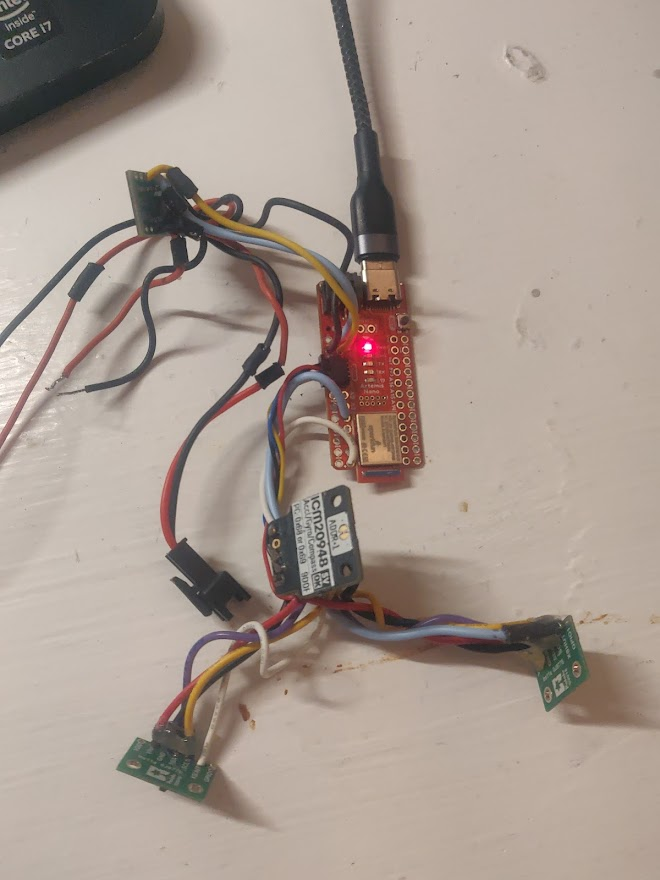1. TOF SENSOR
The TOF sensor
1. Finding the TOF I2C Address
To find the sensor's I2C address, the program was ran. The resulting address for the sensor that was determined was 0x29.
2. Different modes
setDistanceModeShort: This mode is the shortest mode and can only detect ranges up to 1.3m. It is less sensitive to noise at this setting, but can not see larger distances.
setDistanceModeMedium: This mode lies somewhere in the middle of the short and long range mode. It it suitable for medium modes, and detection between 1.3 and 4m.
setDistanceModeLong: This can detect up to 4m, but measurements take longer and noise has greater effect on the measurements
3. Testing chosen mode (setDistanceModeShort)
The following criteria were tested for the TOF sensor: Accuracy, Repeatability, and Ranging time. Additionally, this was tested on two colors - assumed to be most common in indoor environments: White and Black.
Accuracy Readings
Since I did not have a ruler handy, I used a letter paper as a ruler - 11 inches, and 5.5 inches (letter paper folded in half). This was used to collect data on accuracy.
Note: The point readings represent TOF values, and the x = y line represents the expected values.
White Wall TOF Sensor Readings - Accuracy (279.4mm, 139.7mm):

Black Wall TOF Sensor Readings - Accuracy (279.4mm, 139.7mm):

From the data seen above for both the white and black walls, the accuracy of the WHITE wall is slightly lower than that of the black wall. The white wall seems to underestimate total distance (estmimating approx. 2.6% under the actual distance).
Repeatability, Ranging Time Readings
Values for repeability (over 20 datapoints), and ranging time were likewise collected. Ranging time values were determined by using the millis() function which saves timestamps at which a specific line of code executed.
Repeatability and Ranging Time Determination
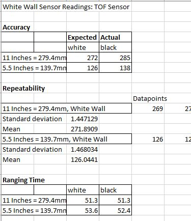A code snippet of the TOF data-collection script (both data and ranging times) is included below:
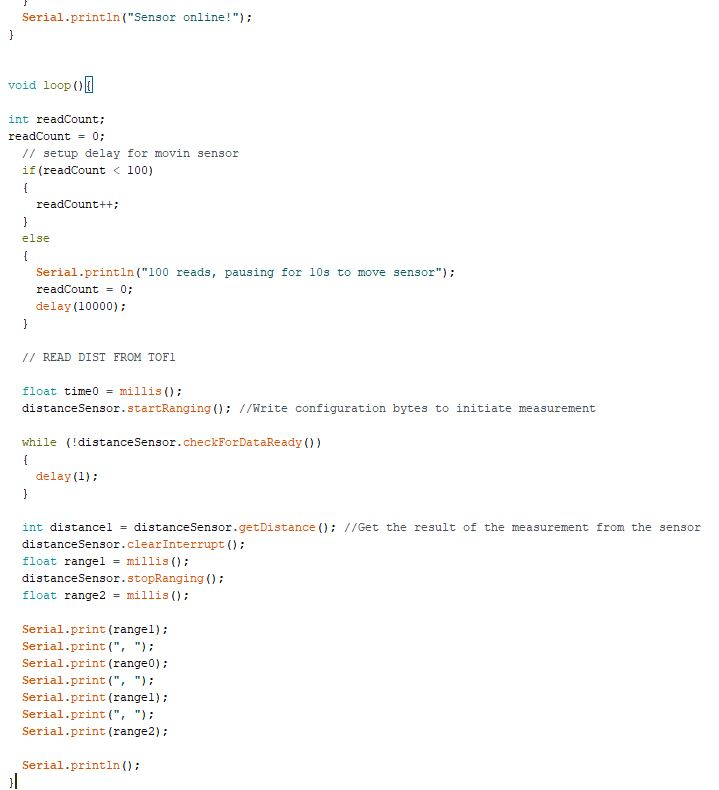2. IMU SENSOR
This portion of the lab involved the IMU sensor. This required less wiring and setup as the TOF did, since the address did not require any modification
1. ADD_VAL 0
The ADD_VAL value needed to be changed from 1 to 0 for this particular setup. The ADD_VAL register is used on the Sparkfun board when the ADR jumper is set. Since we did not have such a jumper on our board, I checked the datasheet and determined that the ADD_VAL needed to be set to 0 for our purposes. This yielded proper functioning of the IMU.
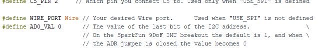2. Chage in Values - Rotate, Flip, Accelerate
To visualize the data changes as i moved the IMU, I used the SerialPlot tool. This was useful because it was difficult to make sense of changes in data when visualizing with the Serial Monitor. Below is a screenshot of the changes in values as the IMU is rotated and flipped:
SerialPlot: Flipping, Rotating the IMU - GYROSCOPE
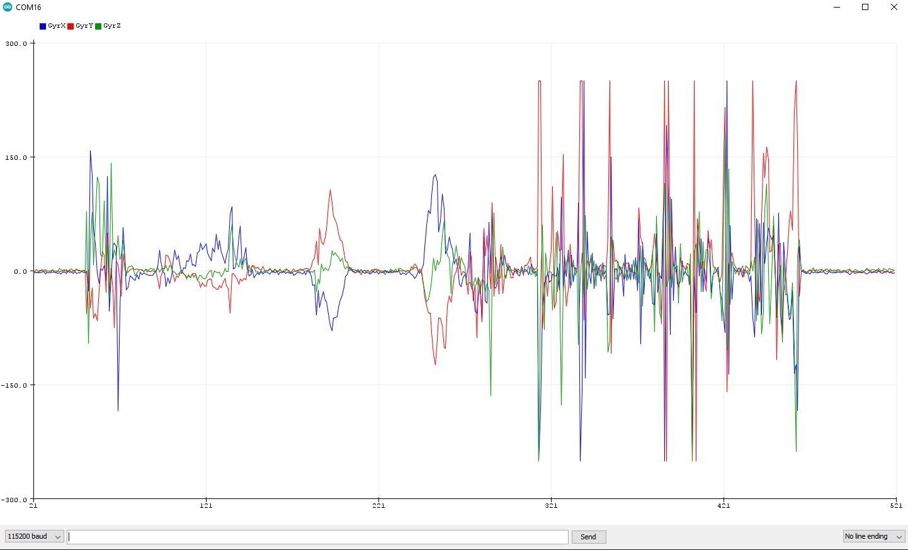SerialPlot: Flipping, Rotating the IMU - MAGNETOMETER
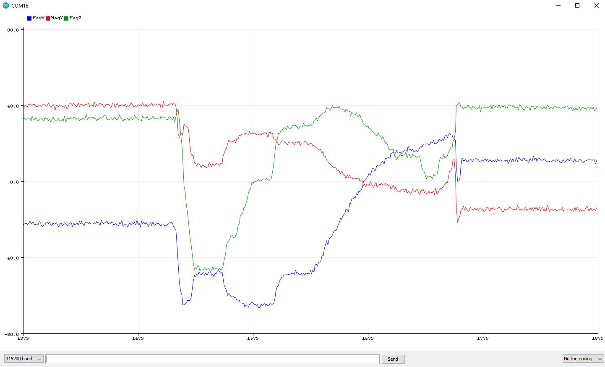Here, the gyroscope values are in degrees/sec and the accelerometer data is in milligs. From the above plots, we can see these values change as the IMU is rotated. Additionally, we can see the sensitivity to taps.
3. Pitch and Roll - Plotting the FFT
This part of the lab involved computing the pitch and roll via the accelerometer, and plotting this. Next, the FFT of the signal was taken to determine the frequency of taps to the sensor.
The pith and roll plots clearly show the evolution of the singal as the IMU is rotated.
SerialPlot: PITCH AND ROLL
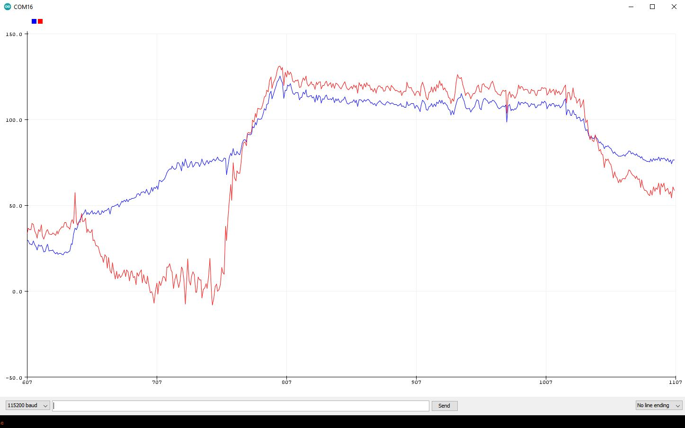The same was plotted with matlab to confirm proper data export:
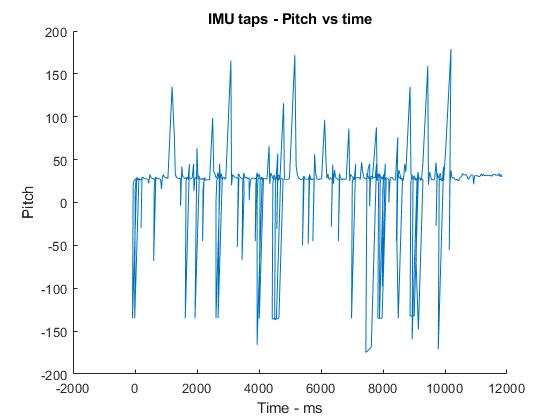Next, the FFT of the data was taken to determine the frequency.
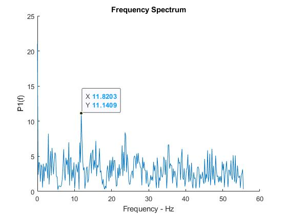From this data, it seems that we have a peak in noise around 12Hz. However, it is not a very clear peak, and we see many other peaks that are only slightly lower in amplitude. This might stem from the built-in low-pass filter that already removes much of the noise.
Choosing this frequeny (12Hz), we determine an alpha of 0.43
Added LP FILTER
The low-pass filter with an alpha of 0.43 was added
float rad_2_degrees = 57.2958;
double pitch = 0.43* atan2(sensor->accY(), sensor->accZ()) * rad_2_degrees + (1 - 0.43) * pitch_prev;
pitch_prev = pitch;
double roll = 0.43* atan2(sensor->accY(), sensor->accZ()) * rad_2_degrees + (1 - 0.43) * roll_prev;
roll_prev = roll;
Serial.print(pitch);
Serial.print(", ");
Serial.print(roll);
Serial.print(", ");
Serial.println();
These adjustements were tested in serial plotter:
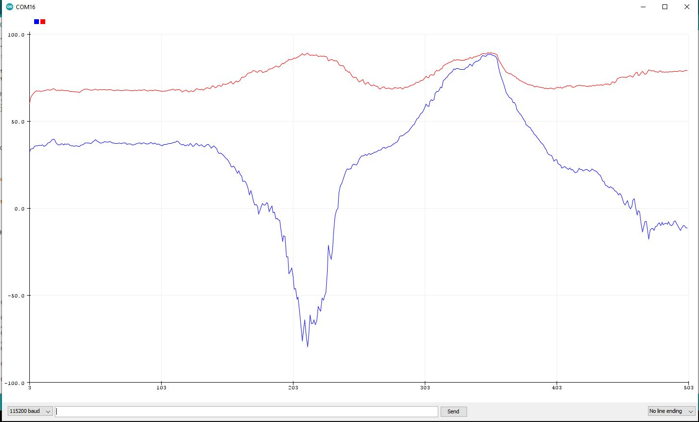Indeed, it looks like the data is now much smoother than it previously was! SUCCESS!
4. GYROSCOPE
The first step here was to calculate roll, pitch and yaw of the IMU. This is done by taking the time difference since the sensor was last read.
Plotting this for the GYROSCOPE yieds the following plots:
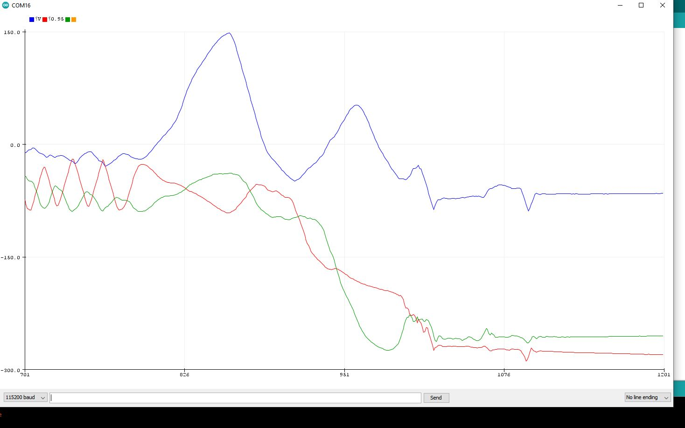The values of the Gyroscope vs accelerometer were compared for the PITCH. THis was plotted on the serial plotter for comparison
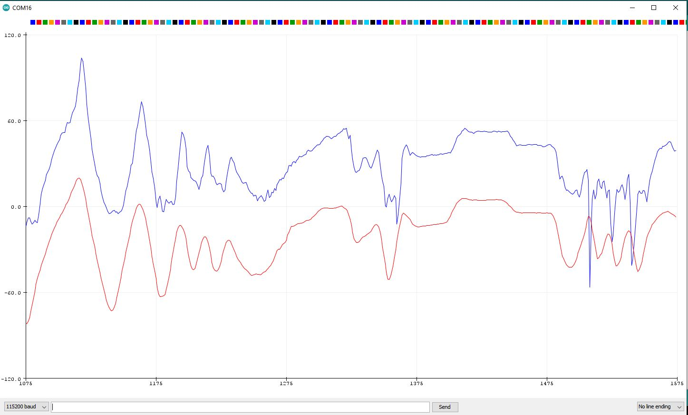PICH: GYRO VS ACCELEROMETER: What directly is obvious from the above plot, is that the accelerometer is much noisier than the gyroscope. The gyroscope is a better choice for this purpose.
4.2 Last but not least: Complimentary Filter
A complimentary filter was added to reduce the noise and get more stability in readings. The output of the complimentary filter on the pitch and role was plotted, as seen below:
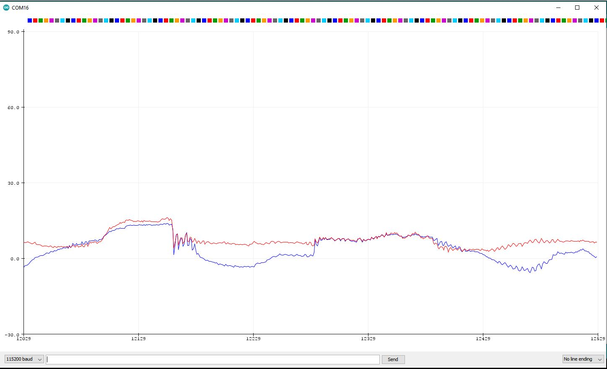As seen above, the complimentary filter definitely smoothes things out - but maybe smooths the readings out a bit too much, and loses in reactivity.
ALL CODE
Given the challenging length of this lab, I did not pay much attention to code cleanliness, but this will improve as the robot is functionally built. Below is the script that combines all my work:
/****************************************************************
* Example1_Basics.ino
* ICM 20948 Arduino Library Demo
* Use the default configuration to stream 9-axis IMU data
* Owen Lyke @ SparkFun Electronics
* Original Creation Date: April 17 2019
*
* Please see License.md for the license information.
*
* Distributed as-is; no warranty is given.
***************************************************************/
#include "ICM_20948.h" // Click here to get the library: http://librarymanager/All#SparkFun_ICM_20948_IMU
//#define USE_SPI // Uncomment this to use SPI
//#define SERIAL_PORT Serial
#define SPI_PORT SPI // Your desired SPI port. Used only when "USE_SPI" is defined
#define CS_PIN 2 // Which pin you connect CS to. Used only when "USE_SPI" is defined
#define WIRE_PORT Wire // Your desired Wire port. Used when "USE_SPI" is not defined
#define AD0_VAL 0 // The value of the last bit of the I2C address. \
// On the SparkFun 9DoF IMU breakout the default is 1, and when \
// the ADR jumper is closed the value becomes 0
#ifdef USE_SPI
ICM_20948_SPI myICM; // If using SPI create an ICM_20948_SPI object
#else
ICM_20948_I2C myICM; // Otherwise create an ICM_20948_I2C object
#endif
double pitch_prev = 1;
double roll_prev = 1;
double delta = 0;
double prev = 0;
void setup()
{
Serial.begin(115200);
while (!Serial)
{
};
#ifdef USE_SPI
SPI_PORT.begin();
#else
WIRE_PORT.begin();
WIRE_PORT.setClock(400000);
#endif
//myICM.enableDebugging(); // Uncomment this line to enable helpful debug messages on Serial
bool initialized = false;
while (!initialized)
{
#ifdef USE_SPI
myICM.begin(CS_PIN, SPI_PORT);
#else
myICM.begin(WIRE_PORT, AD0_VAL);
#endif
// SERIAL_PORT.print(F("Initialization of the sensor returned: "));
// SERIAL_PORT.println(myICM.statusString());
if (myICM.status != ICM_20948_Stat_Ok)
{
// SERIAL_PORT.println("Trying again...");
delay(500);
}
else
{
initialized = true;
}
}
}
void loop()
{
if (myICM.dataReady())
{
myICM.getAGMT(); // The values are only updated when you call 'getAGMT'
// printRawAGMT( myICM.agmt ); // Uncomment this to see the raw values, taken directly from the agmt structure
printScaledAGMT(&myICM); // This function takes into account the scale settings from when the measurement was made to calculate the values with units
delay(20);
}
else
{
// SERIAL_PORT.println("Waiting for data");
delay(500);
}
}
// Below here are some helper functions to print the data nicely!
//
//void printPaddedInt16b(int16_t val)
//{
// if (val > 0)
// {
// SERIAL_PORT.print(" ");
// if (val < 10000)
// {
// SERIAL_PORT.print("0");
// }
// if (val < 1000)
// {
// SERIAL_PORT.print("0");
// }
// if (val < 100)
// {
// SERIAL_PORT.print("0");
// }
// if (val < 10)
// {
// SERIAL_PORT.print("0");
// }
// }
// else
// {
// SERIAL_PORT.print("-");
// if (abs(val) < 10000)
// {
// SERIAL_PORT.print("0");
// }
// if (abs(val) < 1000)
// {
// SERIAL_PORT.print("0");
// }
// if (abs(val) < 100)
// {
// SERIAL_PORT.print("0");
// }
// if (abs(val) < 10)
// {
// SERIAL_PORT.print("0");
// }
// }
// SERIAL_PORT.print(abs(val));
//}
//void printRawAGMT(ICM_20948_AGMT_t agmt)
//{
// SERIAL_PORT.print("RAW. Acc [ ");
// printPaddedInt16b(agmt.acc.axes.x);
// SERIAL_PORT.print(", ");
// printPaddedInt16b(agmt.acc.axes.y);
// SERIAL_PORT.print(", ");
// printPaddedInt16b(agmt.acc.axes.z);
// SERIAL_PORT.print(" ], Gyr [ ");
// printPaddedInt16b(agmt.gyr.axes.x);
// SERIAL_PORT.print(", ");
// printPaddedInt16b(agmt.gyr.axes.y);
// SERIAL_PORT.print(", ");
// printPaddedInt16b(agmt.gyr.axes.z);
// SERIAL_PORT.print(" ], Mag [ ");
// printPaddedInt16b(agmt.mag.axes.x);
// SERIAL_PORT.print(", ");
// printPaddedInt16b(agmt.mag.axes.y);
// SERIAL_PORT.print(", ");
// printPaddedInt16b(agmt.mag.axes.z);
// SERIAL_PORT.print(" ], Tmp [ ");
// printPaddedInt16b(agmt.tmp.val);
// SERIAL_PORT.print(" ]");
// SERIAL_PORT.println();
//}
//void printFormattedFloat(float val, uint8_t leading, uint8_t decimals)
//{
// float aval = abs(val);
// if (val < 0)
// {
// SERIAL_PORT.print("-");
// }
// else
// {
// SERIAL_PORT.print(" ");
// }
// for (uint8_t indi = 0; indi < leading; indi++)
// {
// uint32_t tenpow = 0;
// if (indi < (leading - 1))
// {
// tenpow = 1;
// }
// for (uint8_t c = 0; c < (leading - 1 - indi); c++)
// {
// tenpow *= 10;
// }
// if (aval < tenpow)
// {
// SERIAL_PORT.print("0");
// }
// else
// {
// break;
// }
// }
// if (val < 0)
// {
// SERIAL_PORT.print(-val, decimals);
// }
// else
// {
// SERIAL_PORT.print(val, decimals);
// }
//}
#ifdef USE_SPI
void printScaledAGMT(ICM_20948_SPI *sensor)
{
#else
void printScaledAGMT(ICM_20948_I2C *sensor)
{
#endif
float value;
// SERIAL_PORT.print("Scaled. Acc (mg) [ ");
// printFormattedFloat(sensor->accX(), 5, 2);
// SERIAL_PORT.print(", ");
// printFormattedFloat(sensor->accY(), 5, 2);
// SERIAL_PORT.print(", ");
// printFormattedFloat(sensor->accZ(), 5, 2);
// SERIAL_PORT.print(" ], Gyr (DPS) [ ");
// SERIAL_PORT.print("\t");
// printFormattedFloat(sensor->gyrX(), 5, 2);
// SERIAL_PORT.print("\t");
// printFormattedFloat(sensor->gyrY(), 5, 2);
// SERIAL_PORT.print("\t");
// value = 1+1;
// Serial.print("AccX:"); Serial.print(sensor->accX()); Serial.print(", ");
// Serial.print("AccY:"); Serial.print(sensor->accY()); Serial.print(", ");
// Serial.print("AccZ:"); Serial.print(sensor->accZ()); Serial.print(", ");
// double pitch_a = atan2(myICM.accX(), myICM.accZ())*180/M_PI;
// double roll_a = atan2(myICM.accY(), myICM.accZ())*180/M_PI;
// Serial.print(pitch);
// Serial.print(", ");
//// Serial.print(roll_a);
//// Serial.print(", ");
// Serial.println();
// PART 4 - ADDING LOW PASS FILTER
// LPF
// float rad_2_degrees = 57.2958;
// double pitch = 0.43* atan2(sensor->accX(), sensor->accZ()) * rad_2_degrees + (1 - 0.43) * pitch_prev;
// pitch_prev = pitch;
// double roll = 0.43* atan2(sensor->accY(), sensor->accZ()) * rad_2_degrees + (1 - 0.43) * roll_prev;
// roll_prev = roll;
// double pitch = 0.43 * atan2(sensor->accX(), sensor->accZ()) * rad_2_degrees + (1 - 0.43) * pitch_prev;
// Serial.print(pitch);
// Serial.print(", ");
// Serial.print(roll);
// Serial.print(", ");
// PART 5 - GYROSCOPE
// delta = (micros()-prev)/1000000.0;
// prev = micros();
// pitch_g = pitch_g - sensor->gyrY()*delta;
// roll_g = roll_g + sensor->gyrX()*delta;
// yaw_g = yaw_g + sensor->gyrZ()*delta;
//
// Serial.print(pitch_g);
// Serial.print(", ");
//// Serial.print(roll_g);
//// Serial.print(", ");
//// Serial.print(yaw_g);
// Serial.println();
// PART 6 - Complimentary Filter
double pitch_prev = atan2(sensor->accX(), sensor->accZ())*180/M_PI;
double roll_prev = atan2(sensor->accY(), sensor->accZ())*180/M_PI;
double pitch = (pitch -sensor->gyrY()*delta)*0.9 + pitch_prev*0.1;
double roll = (roll + sensor->gyrX()*delta)*0.9 + roll_prev*0.1;
Serial.print(pitch);
Serial.print(", ");
Serial.print(roll);
Serial.println();
// printFormattedFloat(sensor->gyrZ(), 5, 2);
// SERIAL_PORT.print(" ], Mag (uT) [ ");
// printFormattedFloat(sensor->magX(), 5, 2);
// SERIAL_PORT.print(", ");
// printFormattedFloat(sensor->magY(), 5, 2);
// SERIAL_PORT.print(", ");
// printFormattedFloat(sensor->magZ(), 5, 2);
// SERIAL_PORT.print(" ], Tmp (C) [ ");
// printFormattedFloat(sensor->temp(), 5, 2);
// SERIAL_PORT.print(" ]");
// SERIAL_PORT.println();
}
- - - - - This concludes Lab 3 - - - - -